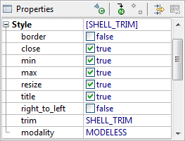
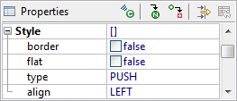

SWT Styles may be edited by expanding the Style property in the Property Pane. Boolean sub-properties can be toggled on and off via their checkboxes and other property values selected from their drop down lists.
 